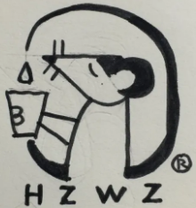

我本来就不欠你什么。从我这里，你该拿的，不该拿的，你都拿了。我没说话，也没觉得有什么问题。只是以后不会了
长大了，不能总做父母的小棉袄，你要成为他们的防弹衣，还要做自己的铠甲!
非让现实给你一巴掌，你才知道社会有多虚伪，非让所谓的朋友把你伤的什么都不是，你才知道人心可畏。
与其违心赔笑，不如一人安静，与其在意别人的背弃和不善，不如经营自己的尊严和美好。
其实，没有什么东西是不能放手的。时日渐远，当你回望，你会发现，你曾经以为不 可以放手的东西，只是生命里的一块跳板，令你成长。
其实，没有什么东西是不能放手的。时日渐远，当你回望，你会发现，你曾经以为不 可以放手的东西，只是生命里的一块跳板，令你成长。
其实，没有什么东西是不能放手的。时日渐远，当你回望，你会发现，你曾经以为不 可以放手的东西，只是生命里的一块跳板，令你成长。
其实，没有什么东西是不能放手的。时日渐远，当你回望，你会发现，你曾经以为不 可以放手的东西，只是生命里的一块跳板，令你成长。